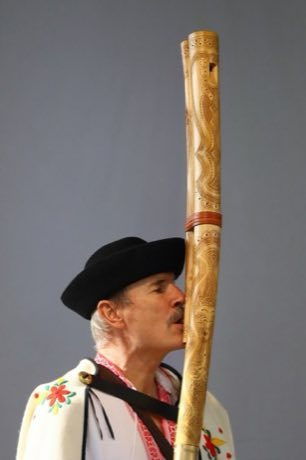

Home / Classical Worlds / Northern and Eastern Europe
Playable heritage gameFujara
Also known as Shepherd's Overtone Flute
The fujara is a tall wooden overtone flute of the Slovak highlands, up to two metres long, with only three finger holes. A short mouth tube carries the breath to the edge near the top, and the player coaxes a whole melody from the pipe's natural overtones by blowing harder or softer.



How to play
- Four finger positions run up the pipe, numbered 1 to 4; the plain numbers are the low register, the numbers with a small mark on the right are the same fingering blown harder.
- On the pipe, a filled ring is a covered hole and a dark ring is an open one.
- Notes travel down the tube from the mouth; touch the matching ring as the breath arrives, and let long notes ring.
- Start with climbing the overtones, then the meadow call and the herd going home.
Rules at a glance
- The pipe has three finger holes; covering all three gives the lowest fundamental, lifting fingers from the bottom upward gives higher fundamentals.
- Each fingering can sound two notes: blown softly it gives the low register, blown harder it jumps up to an overtone (the marked rings on the right).
- Pitches follow a fixed low fundamental near 98 Hz; fingerings 1 to 4 sit at the low register and their upper partners an octave or more above.
- A stroke within a hair of the note is perfect, a near one is good, and a missed one scores nothing.
- An extra stroke while a song is running costs a few points.
- Each song plays twice; three stars need roughly nine notes in ten on time.
About the tradition
The fujara is played by shepherds in the mountains of central Slovakia, where its long, soft voice carried across pastures. Makers still carve and tune each pipe by hand, and the instrument is recognised internationally as part of Slovakia's living heritage.
Origins
Usually placed in the era of Classical Worlds (about 1000 BCE to 500 CE), although its exact origins are uncertain, within the cultural world of Northern and Eastern Europe.
Credits
- Tradition: Slovak fujara playing; melodies written for this game
- Photo by Palo Cepcek from Wikimedia Commons (CC BY-SA 4.0)
- Photo: Palo Čepček, CC BY-SA 4.0, source on Wikimedia Commons
- Text: CC BY-SA 4.0, World Heritage Games.
Sources

Get the app
Fujara is one of 9 instruments and voices in the Wind & Voice of the World app for Android. Submitted to Google Play; in review. Store links appear here the day it goes live. One app, many traditions, no account needed.
More games to play


Highland Bagpipe Chanter and Drone
United Kingdom · Musical instrumentsPlay preview · in the Wind & Voice of the World app
More from Slovakia

Čičmany House Ornament Painting
Slovakia · Crafts and makingPlay preview · in the Painted Surfaces of the World app
Hose-Run Fire Sport
Czechia +1 · Dexterity and skill games